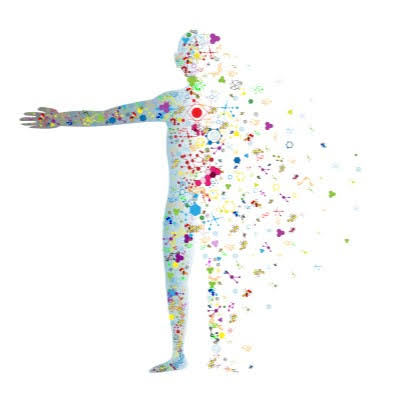
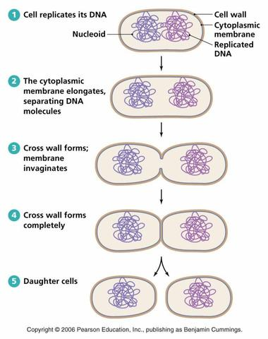

Bacteria
Introduction To Bacteria
 Bacteria are a type of biological cell.Their domain largely constittutes of prokaryotic organisms.They are typically a few micrometres in length and their shapes range from spheres, to rods and spirals. It's speculated that bacteria are among the first life forms to appear on Earth.
Bacterial Diversity
Bacteria are the most numerous and diverse ethnic group in the microbial world. Bacteriaare called prokaryotes because they lack nuclei and organelles.
Effect On The Human Body
- Vibrio cholerae,
- Salmonella,
- Staphylococcus aureus,
But some bacteria that parasitize our intestines help us maintain our health:
- Lactobacillus bifidus,
- some lactic acid bacteria
Medically
In order to deal with these harmful bacteria, humans have developed antibiotics, a magic substance produced by actinomycetes, which can help us fight bacteria and reduce the mortality of diseases.The life expectancy of mankind is far beyond what can be imagined in the nineteenth century, all thanks to antibiotics.
In life
In addition to medical uses, microorganisms play the role of decomposers in the environment.
- They can circulate the fixed nutrients in the biosphere, so that the nutrients can flow in different organisms;
- They also help us decompose the toxic substances in the environment, so that the polluted environment can be used again by us;
- They also produce some greenhouse gas, causing environmental damage.
On food
Bacteria are also used to produce some dairy products, such as cheese and yogurt.
Types of Bacteria
There are many different types of bacteria. One way of classifying them is by shape. There are three basic shapes.
| Name | Description |
|---|---|
| Spherical | Bacteria shaped like a ball are called cocci, and a single bacterium is a coccus. Examples include the streptococcus group, responsible for “strep throat.” |
| Rod-shaped | These are known as bacilli (singular bacillus). Some rod-shaped bacteria are curved. These are known as vibrio. Examples of rod-shaped bacteria include Bacillus anthracis (B. anthracis), or anthrax. |
| Spiral | These are known as spirilla (singular spirillus). If their coil is very tight they are known as spirochetes. Leptospirosis, Lyme disease, and syphilis are caused by bacteria of this shape. |
| To Learn more about bacteria | https://en.m.wikipedia.org/wiki/Bacteria |